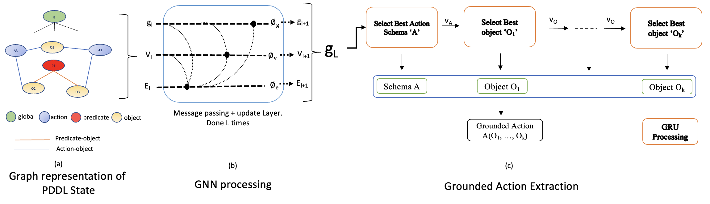

Why Learning for Planning?
Classical planners struggle with scale: Traditional planners use search and heuristics. While they can find optimal solutions, they often struggle with scalability and become computationally expensive or too slow for large, complex problems.
PDDL structure enables sample-efficient learning: Unlike standard Reinforcement Learning, which can require millions of examples, the relational structure of PDDL (Planning Domain Definition Language) allows Graph Neural Networks (GNNs) to learn generalizable policies from just thousands of examples.
Learn on small, apply to large: The core idea is to train a model on small problem instances (e.g., 6-9 block problems) and then apply that learned policy to solve significantly larger instances (e.g., 40-block problems) where classical planners fail.
The Problem with Existing Approaches
Value functions require global consistency: Learning distance-to-goal for all states is NP-hard and generalizes poorly. Many approaches try to learn a value function, V(s), that estimates the cost-to-goal from any state. This is extremely difficult because the function must be globally consistent, and since optimal planning is NP-hard, these value functions are hard to learn and often don't generalize well.
Fixed architectures limit reasoning: Models like ASNets have a fixed receptive field, failing to capture long-range dependencies. This design limits their ability to reason about long-range dependencies between objects and actions, which is crucial in complex problems.
Missing action structure: Previous GNNs model state but ignore how actions explicitly relate to objects. Previous GNN approaches (like GPL) focus on state representations but do not explicitly model how actions themselves relate to objects. This misses critical information.
GABAR's Key Insight
Rank actions, not states: Learning a local, relative ranking of *applicable actions* is easier and more generalizable. Instead of learning a complex, globally consistent value function V(s) for all states, GABAR learns a simpler, locally consistent function to just rank the applicable actions in the *current* state.
Explicit action representation: The graph includes action nodes connected to their argument objects, encoding applicability. Our novel graph representation includes 'action nodes' that are explicitly connected to the 'object nodes' they take as arguments.
Sequential parameter selection: A GRU decoder builds actions step-by-step, capturing complex parameter dependencies. It first selects an action schema (e.g., 'stack') and then sequentially selects each parameter (e.g., 'blockA', then 'blockB'), conditioning each choice on the previous ones.

Method Overview
Graph representation with 4 node types: Objects, Predicates, Actions, and a Global node. Edges represent predicate-object and action-object relationships, encoding the state, goal, and all potential actions.
GNN encoder with attention: L rounds of message passing (we use 9) update node embeddings, while a global node allows rapid information flow and aggregates graph-level information.
GRU decoder for action construction: Sequentially selects an action schema, then its parameters, using beam search. The final global embedding is fed into a GRU decoder. We use a beam search (width k=2) to explore multiple high-scoring actions in parallel.
Technical Details
Training setup: Trained on 3-6k examples from small problems, labeled by an optimal planner. We generate data by solving small problems (e.g., 6-9 blocks, 5-15 balls) with an optimal planner. The first action of the optimal plan is used as the training label.
Architecture specifics: Hidden dim 64, 9 GNN rounds, Adam optimizer, and a beam search width of 2. We use a hidden dimensionality of 64, 9 rounds of GNN message passing, and a batch size of 16.
Datasets: 3,000-6,000 training examples per domain, generated with standard PDDL generators.